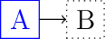
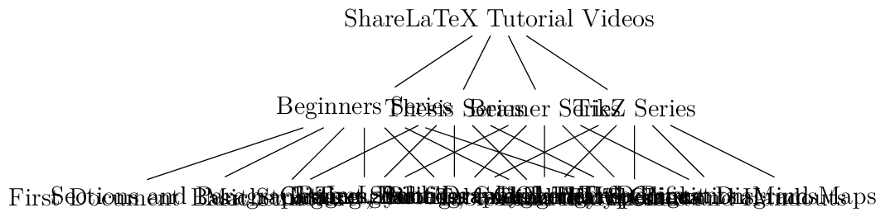

Markdown Files#
Whether you write your book’s content in Jupyter Notebooks (.ipynb) or
in regular markdown files (.md), you’ll write in the same flavor of markdown
called MyST Markdown.
This is a simple file to help you get started and show off some syntax.
What is MyST?#
MyST stands for “Markedly Structured Text”. It is a slight variation on a flavor of markdown called “CommonMark” markdown, with small syntax extensions to allow you to write roles and directives in the Sphinx ecosystem.
For more about MyST, see the MyST Markdown Overview.
Sample Roles and Directives#
Roles and directives are two of the most powerful tools in Jupyter Book. They are kind of like functions, but written in a markup language. They both serve a similar purpose, but roles are written in one line, whereas directives span many lines. They both accept different kinds of inputs, and what they do with those inputs depends on the specific role or directive that is being called.
Here is a “note” directive:
Note
Here is a note
It will be rendered in a special box when you build your book.
Here is an inline directive to refer to a document in this section
{doc}`citations` wich renders as Markdown citations. We can also use ../
to navigate to parent sections like {doc}`../interactive-server/index`.
Diagrams#
Mermaid flowchart#
Warning
At this moment, Mermaid is not working in this Jupyter Book.
We have installed an extension to draw diagrams from text using Mermaid. The
following is an example of the code necessary to generate the diagram below.
Warning
I have removed the directive {mermaid} in the following examples to avoid warnings
flowchart TD
A[square node A] --> B(round edges node B)
A --> C([stadium node C])
B --> D[[subroutine node D]]
B --> E[(database node E)]
B --> F((circle F))
C --> F
graph LR;
A-->B;
A-->C;
B-->D;
C-->D;
sequenceDiagram
participant Alice
participant Bob
Alice->John: Hello John, how are you?
sequenceDiagram
participant Alice
participant Bob
Alice->John: Hello John, how are you?
loop Healthcheck
John->John: Fight against hypochondria
end
Note right of John: Rational thoughts <br/>prevail...
John-->Alice: Great!
John->Bob: How about you?
Bob-->John: Jolly good!
graph TD
A[Client] -->|tcp_123| B(Load Balancer)
B -->|tcp_456| C[Server1]
B -->|tcp_456| D[Server2]
You can find the basic syntax for flowcharts at mermaid.
It is possible to add other diagram plugin extensions. See other options in sphinx-diagrammers.
Mermaid Mindmaps#
With Mermaid it is possible to generate other types of diagrams, the following is an example for a mindmap.
mindmap
root((Data Science))
Statistics
Surveys
Experiments
Scientific Computing
Scientific Methods
Hypothesis Testing
Evaluation
Processes
Parallel Programming
Crawlers
Algorithms
Systems
High Performance Computing
Personal Computers
Distributed Computing
Tikz#



Graphviz#
Warning
At this moment, Graphviz is not working in this Jupyter Book.
graph G {
layout=neato
run -- intr;
intr -- runbl;
runbl -- run;
run -- kernel;
kernel -- zombie;
kernel -- sleep;
kernel -- runmem;
sleep -- swap;
swap -- runswap;
runswap -- new;
runswap -- runmem;
new -- runmem;
sleep -- runmem;
}
UML#
Warning
At this moment, UML is not working in this Jupyter Book. I removed the directive {uml} to avoid compilation Warnings.
```{uml}
Alice -> Bob: Authentication Request
Bob --> Alice: Authentication Response
Alice -> Bob: Another authentication Request
Alice <-- Bob: Another authentication Response
```
Wavedrom#
Blockdiag#
Cross-references#
Caption of the example figure ex1

Fig. 4 Caption of the example figure ex1#
header 1 |
header 2 |
|---|---|
a |
b |
This is a reference to Equation (1)
Videos#
We can insert videos in the middle of a markdown file by using html and and
iframe like the following example
<iframe width="560" height="315"
src="https://www.youtube.com/embed/4kwEMHZJx5A" title="YouTube video player"
frameborder="0" allow="accelerometer; autoplay; clipboard-write;
encrypted-media; gyroscope; picture-in-picture; web-share"
allowfullscreen></iframe>
which renders the following video
Inline-tabs#
First two tabs showing off defining a function.
def main():
return
int main(const int argc, const char **argv) {
return 0;
}
Second two tabs showing off printing.
print("Hello World!")
#include <iostream>
int main() {
std::cout << "Hello World!" << std::endl;
}
Learn more#
This is just a simple starter to get you started. You can learn a lot more at jupyterbook.org.